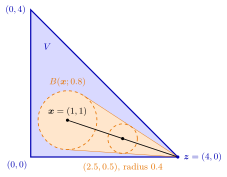

Interior and Closure of a Convex Set¶
Proposition¶
Let be a convex set. Then:
- (a) the interior is an open convex set;
- (b) the closure is a closed convex set;
- (c) if is bounded, then is a compact convex set;
- (d) if , and , then ;
- (e) if , then lies in a hyperplane and ; if , then and .
Here is the set of points with for some , and .
Interpretation¶
Removing the boundary of a convex set, or adding it, gives a convex set again. Moreover, from any interior point one sees every point of the closure through the interior: the segment from to consists of interior points, except possibly itself. This is part (d), and it drives part (e).

The figure shows part (d) for the triangle of Example 2 below. The ball around lies in , since has distance to both legs and to the edge . The shaded cone spanned by and this ball lies in by convexity, and around the point it contains the ball of radius ; at this is the ball of radius around . The radius reaches only at , where the segment ends at the corner .
Part (d), applied to the open disc , explains why is convex although it is neither open nor closed (Example 1 below). The reason is that a ball around inside shrinks by the factor as the point moves towards ; at nothing is left, so itself may be a boundary point.
Openness of , closedness of and compactness of for bounded hold for every set, as in Math III. Convexity adds the word "convex" in (a)–(c), and it is essential for (d) and (e): Example 4 below shows (d) and (e) failing for nonconvex sets. The converse of (a) and (b) is false too: and can be convex while is not.
Part (e) is a dichotomy. A convex set is either flat, lying inside one hyperplane like a segment or a triangle in , or it has interior points; then closing it creates no new interior points, and every point of , including its boundary points, is a limit of interior points. A common misconception is that a convex set must be open or closed; Example 1 below refutes it. Part (e) returns in the separation of disjoint convex sets, where it lets one separate convex sets that have interior points.
Key Results¶
- For convex , is open and convex, is closed and convex, and is compact and convex if is bounded.
- If and , every point with is an interior point of .
- A convex set with empty interior lies in a hyperplane with and , and then .
- A convex set with nonempty interior satisfies and .
- A convex set need not be open or closed: is convex, not open and not closed (Example 1 below).
Examples¶
1. An open disc with one extra point. Let . Two points of the open disc are joined by a segment inside the disc. For and , part (d) applied to the convex set puts every point of the segment except in . So is convex. It is not open, because is not an interior point, and not closed, because . Here , the largest open subset of , and , the smallest closed set containing ; both are convex.
2. A segment towards a corner. Let be the filled triangle with corners , , , that is . Take and the corner . Then , with , and for : all three inequalities are strict, so the point is interior, as (d) predicts. Only at does the segment reach the boundary.
3. Flat convex sets. The plane is closed and convex. It has no interior points: for and , the point gives for every . Hence and , in line with (e). Likewise the filled triangle with corners , , is convex with empty interior in ; it lies in the hyperplane .
4. Without convexity (d) and (e) fail. In , let . Then and are interior points, but their midpoint , so (d) fails; and . Next let . Every interval contains irrational numbers, so , yet does not lie in a hyperplane of (a single point), and . Here and are both convex, while is not: for .
Prerequisites¶
Related Concepts¶
- Halfspace
- Intersection and Sum of Convex Sets
- Convex Hull
- Boundary of a Set
- Separation of Disjoint Convex Sets
- Supporting Hyperplane
- Continuity of Convex Functions
Sources¶
- Math VI: Convexity and Optimization · Week 1
- H. E. Nusse and M. Dienstknecht, Math VI: Convexity and Optimization, lecture notes 2026–2027, Section 1.1
Aliases: interior of a convex set, closure of a convex set, line segment principle Keywords: \operatorname{Int}(V), \operatorname{Cl}(V), (1-\lambda)\boldsymbol{x}+\lambda\boldsymbol{z}\in\operatorname{Int}(V), \operatorname{Int}(\operatorname{Cl}(V))=\operatorname{Int}(V), convex set with empty interior lies in a hyperplane Symbols: element of, epsilon, intersection, lambda, partial, rational numbers, real numbers, square root, subset, union
Last updated: 10 November 2026 16:43
Interior and Closure of a Convex SetSeparation of Disjoint Convex SetsConvex Set in R^nInterior of a SetAdherent Point and Closure of a SetCompact SetHyperplaneHalfspaceIntersection and Sum of Convex SetsConvex HullBoundary of a SetSupporting HyperplaneContinuity of Convex Functions